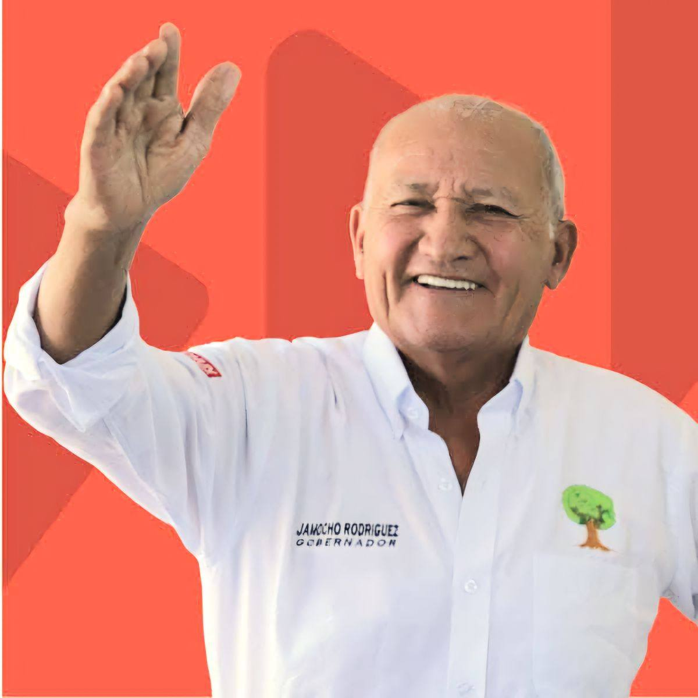

Campaña Regional 2024
¡Más Chamba para todos!
Junto a Jamocho Rodriguez, construiremos una región con oportunidades reales, transparencia y desarrollo sostenible para cada familia.


+15,000 ciudadanos ya se unieron

Jamocho Rodriguez
Candidato a Gobernador Regional